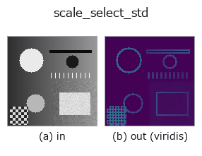

texture op• Datenarten: image → image
• Aufruf: fullseye.apply(img, "scale_select_std", a=0.5, b=0.5) (das 2-D-Modell ist ein Bild plus zwei skalare Regler a,b∈[0,1])

*Die Abbildung ist die tatsächliche Ausgabe auf einer synthetischen 128×128-Eingabe. Links Eingabe, rechts Ausgabe. Punktwolken als Draufsicht-Streudiagramm (Helligkeit = z), 1-D-Reihen als Linie, Volumen als Maximum-Projektion entlang z, Videos als mittleres Bild, komplexe Bilder als Betrag; Rückgabewerte, die kein Bild ergeben, werden als Werte gezeigt.*
*Die Ausgabe ist in einer viridis-artigen Falschfarbe dargestellt (dunkles Violett = klein, Gelb = groß), damit ein Feld von Größen — Abstand, Phase, Orientierung, Tiefe — lesbar ist.*
Regler a durchfahren (0,1 / 0,5 / 0,9, der andere Regler auf Standard):
▸ scale_select_std: knob a sweep (docs site)
Regler b durchfahren (0,1 / 0,5 / 0,9, der andere Regler auf Standard):
▸ scale_select_std: knob b sweep (docs site)
Auf anderen Bildern (synthetische Szene / Foto / Münzen. Obere Reihe: Eingaben, untere Reihe: deren Ausgaben. Regler auf Standard):
▸ scale_select_std: other inputs (docs site)
*Die 4. Spalte ist eine Farb-Eingabe (H,W,3). Dieser Op verarbeitet Farbe, ohne Kanäle zu vermischen (er faltet den Farbkanal nicht als dritte Raumachse).*
> Für diesen Operator gibt es noch keine Übersetzung. Es folgt der Originaltext unverändert.
画素ごとに窓の大きさを選ぶ局所標準偏差(Lepski / ICI 規則)。
窓を広げるほど推定は安定するが(相対標準誤差 `1/sqrt(2(n-1))`)、縁がにじんで
分解能が落ちる —— 大きさを 1 つ選ぶ限りこの矛盾は解けない。解き方は「時間でも
場所でもなく場所ごとに別の答えを持つ」こと: 小さい窓から順に、推定値の信頼区間が
交わり続ける間だけ窓を広げ、交わらなくなった 1 つ手前で止める。平坦な所では大きな窓
(安定)、縁の近くでは小さな窓(にじまない)が自動で選ばれる。
`a が試す窓の上限(3,5,7,9,11,13,15 のどこまでか)、b` が信頼区間の倍率
`gamma(1.0〜3.0)。gamma` を大きくすると窓が伸びやすくなる(安定寄り)。
**`local_std との関係**: local_std` は窓を固定する。平坦部の推定を締めたくて
窓を広げると縁がにじむ、という取引をこちらは場所ごとに解く。**縁の鋭さを保ったまま
平坦部の誤差だけ下げられる**のが取り柄で、代わりに計算量が窓の数だけ増える。
適用条件: (1) 「交わるか」の判定は誤差限界が正しいことに依存する —— 白色雑音
でない(空間相関のある)雑音では窓が伸びすぎる。(2) `gamma` が小さすぎると常に
最小窓が選ばれ、`local_std` の 3x3 と同じになる(効いていないときの見分け方)。
• Leitfaden zur Familie gallery2d_texture_freq
• Katalog der Beispieldaten (Download-URLs / Lizenzen) — 2-D nutzt skimage.data (BSD/Public Domain) plus synthetische Bilder, 3-D nennt Download-URLs echter Datenquellen (Stanford, PDS, …).
• Herkunft und Literatur der Operatoren — die Quellen der Forschung/Verfahren, auf denen diese Operatorfamilie beruht.
• Der kanonische Algorithmus (Autor, Jahr) und seine Anwendungen stehen im Familienleitfaden oben.
Das Programm unten ist nachweislich lauffähig (gleiche Eingabe wie die Abbildung). In der Studio-Hilfe wird dieser Block zu Schaltflächen, die es sofort laden und ausführen.
scale_select_std 0.50 0.50
▸ Load this pipeline · Load & run
• gallery2d_texture_freq — py -3.11 examples/gallery2d_texture_freq.py
image als Eingabe)identity · gaussian · mean_box · bilateral · unsharp · median · min_filter · max_filter
texture)std_filter · local_std · bootstrap_std_error · structure_tensor_orientation · structure_tensor_coherence · gabor · sk_frangi · sk_meijering
*Provenance: ops.py — 2D Operator-Registry. Diese Notiz wird von tools/opdocs.py md erzeugt (nicht von Hand bearbeiten).*
© 2026 Kazufumi Furuse — Fullseye operator documentation. Licensed under Apache-2.0.
{kind=link}
{kind=link}
{kind=link}